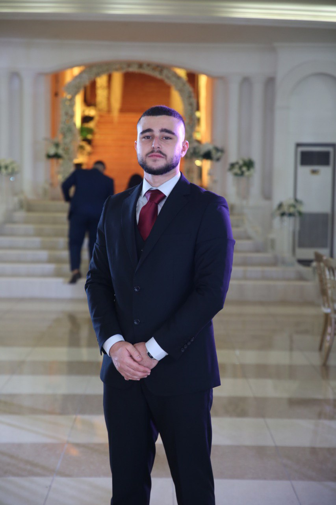

This is my resume!

Summary
i am a undergraduate university student under the computer engineering program, i am currently a third year student and
i am intreste in both web developement and Ai therefore i ma now studying the full web dev course on coursera, i have a high
CGPA sitting at 3.82 and i am involved with multiple social and academic stuff in my univestiry.
I am currently the President
of the ARC Commitee and the ambassador of the ZAKA.Ai international academy. i am planning to keep on the hard work until i
reach all the goals i've set for myself.
Education
Experience
- Scotlia: a search and rescue project introduced for the DARE competition Hosted by the IEEE-LAU Jbeil.
- Car parking simulation: a porject focused on the integration of sensors with the PIC microcontroller.
- Ariplane boarding system: used pythong to simulate the whole process of plane boarding and ticketing for the client.
- Course registration reconstruction: used pure C language to compute and decode a new system that we used for course offering and registration for universtiy students.
- Digital metacarpus: it is a project aimed for a full scale control the sensitive operation of multiple kinds remotly with ensuring to upgrade the preformance of the doctor along with an enhanced Experience using Ai.
Skills
- Leadership Experience.
- Work under stress factor.
- Organised and sharp with deadlines.
- Calm and charismatic
Contact Me!
My hobbies!